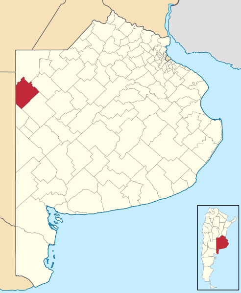
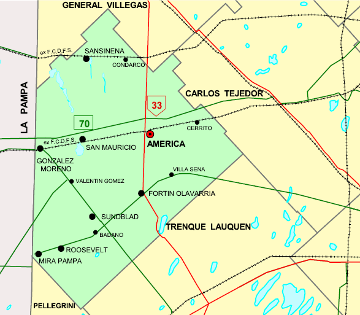

En el partido de Rivadavia, provincia de Buenos Aires, decenas de trabajadores y emprendedores ofrecen el fruto de su talento. Nuestro objetivo es darlo a conocer.
Frutas y verduras orgánicas, comidas para toda hora. Tejidos, tallados, pinturas y dibujos. DJ's y organizadores de eventos. Diseñadores de interiores y exteriores. Estilistas y confeccionistas. Docentes de idiomas.
Conocé todo lo que tenemos para ofrecer.Si pertenecés a nuestra comunidad y querés presentar tu trabajo, contactanos.
Te haremos un pequeño lugar en nuestro sitio para que puedas seguir creciendo y además, ayudes a otros vecinos a hacer lo mismo.
Rivadavia es uno de los 135 partidos de la provincia de Buenos Aires. Su cabecera es la ciudad de América. Limita al norte con los Partidos de General Villegas y Carlos Tejedor, por el Este con Carlos Tejedor y Trenque Lauquen, por el Sur con Trenque Lauquen y Pellegrini y por el Oeste con la Provincia de La Pampa. Está ubicado en la región conocida como la pampa húmeda. Ocupa una superficie de 3.940 km², y tiene una densidad poblacional de 4,4 hab/km².
|  |  |
El partido fue creado por la Ley provincial Nº 3.273, sancionada el 23 de septiembre de 1910 y promulgada el 30 de septiembre del mismo año, tomándose esta última como fecha de creación. La ley determinó que a partir de ese momento se llamaría Rivadavia, en honor a Bernardino Rivadavia. En 2010, tenía una población aproximada de 17 mil habitantes.
El partido está integrado por las siguientes localidades: